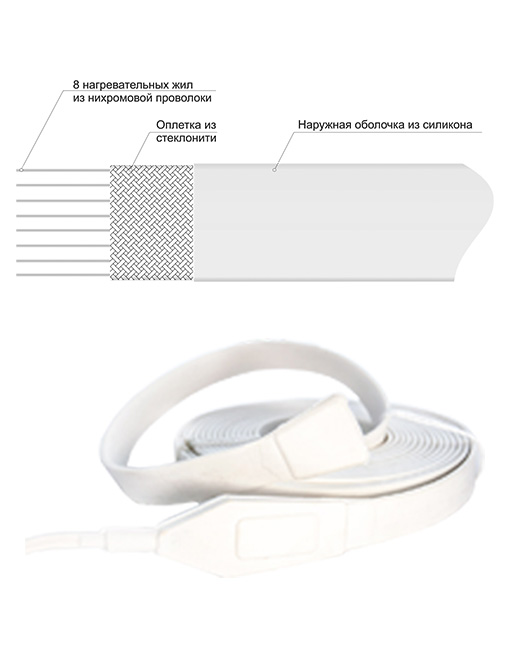

Греющий кабель · ТЕРМ
ЭНГЛ-1
Среднетемпературная нагревательная лента ЭНГЛ-1
Цена по запросу
Модели и цены
Цена по запросу
Позиции нет в прайсе от 27.10.2026; цену уточняйте перед заказом.
Среднетемпературная нагревательная лента ЭНГЛ-1
Производитель: ТЕРМ (Россия: Петербург)
Нагревательная лента для предотвращения замерзания, промышленного подогрева трубопроводов и резервуаров (ёмкостей), а также поддержания технологической температуры до +180 °С.
Пример обозначения
Нагревательная лента ЭНГЛ-1 представляет собой готовое изделие определенного размера и мощности и не подлежат дальнейшей резке. Внутри ленты находятся восемь нагревательных жил из нихромовой проволоки. Наружная оболочка и концевые муфты выполнены из силиконовой резины. Использование силикона в качестве внешней оболочки придает ленте гибкость и дает возможность обогрева поверхностей со сложной конфигурацией.
!!! Температура поверхности нагревательного элемента не должно превышать максимальной температуры, которую выдерживают его конструкционные материалы. Это обеспечивается путем ограничения температуры ленты при помощи терморегулятора.
Конструкция кабеля ЭНГЛ-1


Технические xарактеристики
| Напряжение | 220 В |
| Тип греющего кабеля | резистивный |
| Мощность тепловыделения | от 15 до 100 Вт/метр |
| Максимально допустимая температура | +180 °С |
| Оболочка | силиконовая резина |
| Степень защиты | IP67 |
| Номинальный размер | 23 х 3 мм |
| Минимальный радиус изгиба | 10 мм |
| Длина питающего провода | 1 м |
| Минимальная температура монтажа | -40 °С |
| Масса | 0,12 кг/метр |
Области применения кабеля ЭНГЛ-1
Поддержание температуры трубопроводов
Предотвращение замерзания труб с водой
Обогрев труб и ёмкостей
Особенности:
Оболочка из силикона
Промышленное применение
Обычные среды
Высокотемпературный
* - Нагревательные ленты помеченные данным знаком имеют двухстороннее подключение.
Документы перенесены из прежнего каталога. Перед использованием проверяйте срок их действия.